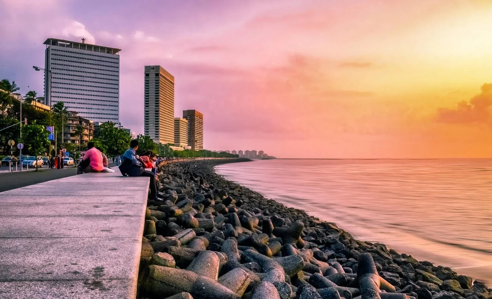
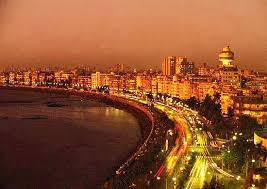
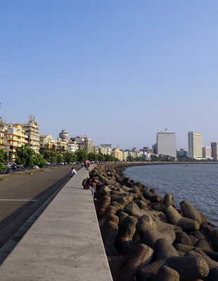
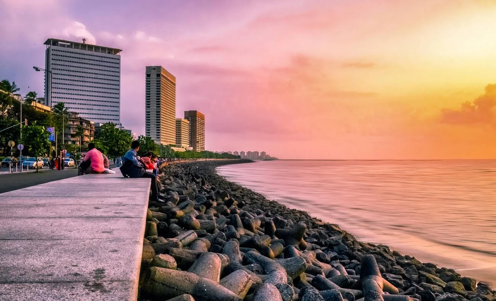
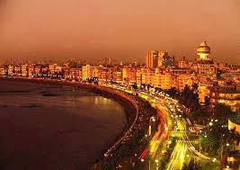
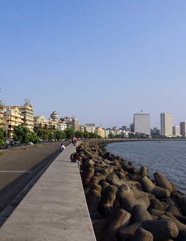

Explore Marine Drive
 





📍 Introduction
Marine Drive is a 3.6 km long boulevard in South Mumbai. It's called the "Queen’s Necklace" for its curve and golden streetlights shining at night.
✨ Best Moments
- Evening sunsets and sea breeze
- Walk with friends/family along the promenade
- Photograph the Mumbai skyline